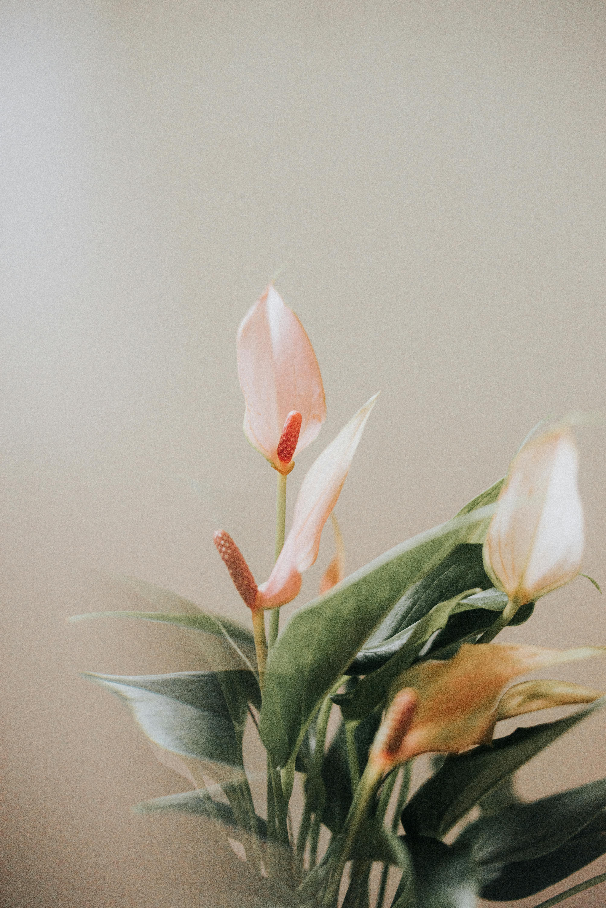

Peace Lily
Description
Attractive indoor foliage plants that produce showy white flowers. They are not true lilies but a member of the Araceae family, which also includes caladiums, elephant ears, anthuriums, and callas.
Peace Lily
Care
Peace lilies likes higher humidity but adapts well to average indoor levels; misting the leaves occasionally can help if the air is too dry.
- Light: Prefers bright, indirect light
- Soil: Well-draining potting mix
- Watering: Water when the top inch of soil feels dry.
Use a balanced fertilizer every 6-8 weeks during the growing season (spring to fall).
Fun Fact
Peace Lily’s white blooms are actually modified leaves called spathes.
More Research
Some articles to help further your independent research: